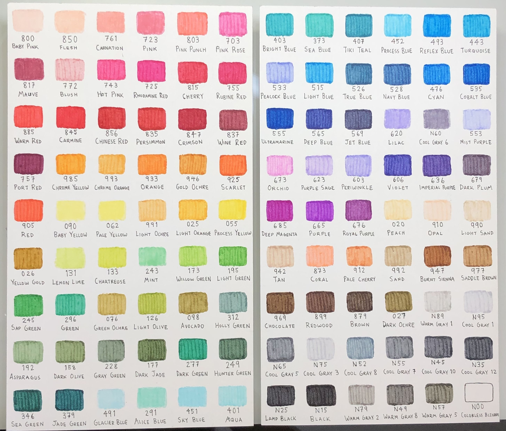

With that tool, draw a symbol (waves, u shapes, a word or phrase, etc.) consistently on each line with the variety of tools to demonstrate the uniqueness each tool creates. Also, keeping the symbol consistent among different tools allows easy tool to tool comparison via the constant swatch.
Different fine tip, gel, brush, etc. type tools may require different symbols, so feel free to associate specific patterns with certain artistic tool mediums.
Yay! Now you can bask in the midst of the cheerful peace of a beautifully swatched piece of art!
